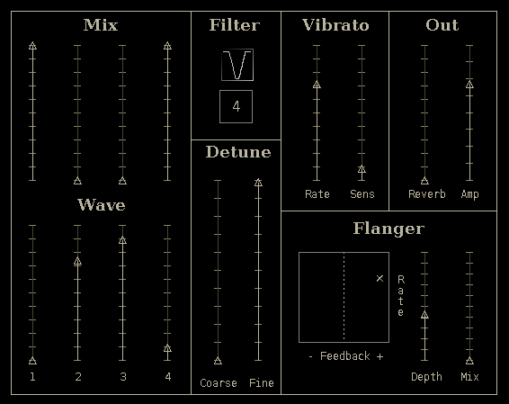

| Cadejo
Manual |
|
| caeli combo |
|
The tone may be further modified by the key-tracking filter. The filter modes are: Bypass, Lowpass, Highpass, Bandpass and Notch. The number box below the filter curve sets the cutoff/center in terms of harmonic number. For example if the key A440 is played and the filter is set to the 4th harmonic the cutoff is 1760 Hz. Vibrato is introduced by the Modulation wheel and the two vibrato sliders are rate and sensitivity. The vibrato rate has an approximate range between 0.17 to 7 Hz. The Flanger has four controls, Rate, Feedback, Depth and Mix. The Rate and Feedback values are set by moving the 'x' handle within the rectangular field. The Reverb sets the level of the wet reverb signal. The reverb decay time is fixed. All amplitude and mix sliders have linear responses. |
 |